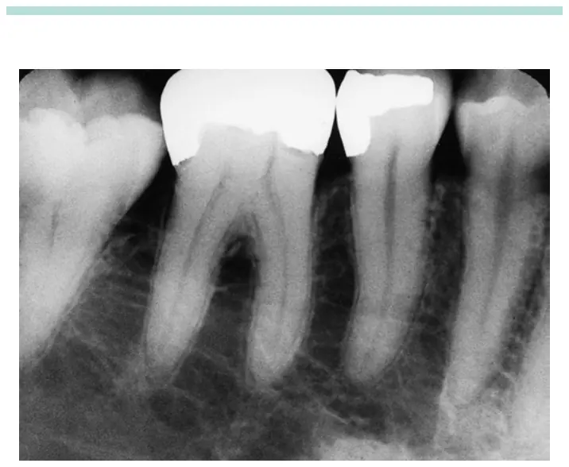

نسخه استخراجشده؛ ترجمه یا تأیید علمی انجام نشده است. وضعیت: captured
مکانیسم روانشناختی این عارضه: وقتی دندانپزشک دندانی را میکشد، تمرکز توجه روی همان دندان و اعمال نیرو برای لوکسیت و تحویل آن است. و وقتی توجه کامل جراح تنها روی همین دندان متمرکز باشد، احتمال آسیب به دندانهای مجاور بیشتر میشود.

و یک منبع آسیب که کمتر به آن فکر میشود: آسیب اغلب با استفاده از بور برای برداشتن استخوان یا تقسیم دندان ایجاد میشود. جراح باید مراقب باشد که هنگام برداشتن جراحی یک دندان، بیش از حد به دندانهای مجاور نزدیک نشود — و این معمولاً میطلبد که جراح بخشی از تمرکزش را روی ساختارهای مجاور محل جراحی نگه دارد.
شایعترین آسیب به دندان مجاور: شکستن یا جابهجا شدن ناخواستهی یک ترمیم، یا آسیب به دندانی که بهشدت پوسیده است، هنگامی که جراح میکوشد دندان هدف را با الواتور لق کند.
چهار قاعدهی پیشگیری از آسیب به دندانهای مجاور:
و قاعدهی عملی دربارهی الواتور مستقیم: پیشگیری عمدتاً با پرهیز از قرار دادن ابزار و اعمال نیرو روی خودِ ترمیم به دست میآید. یعنی وقتی دندان مجاور ترمیم بزرگی دارد، الواتور مستقیم باید با احتیاط بسیار و کاملاً داخل فضای لیگامان پریودنتال وارد شود — یا اصلاً برای لوکسیت کردن دندان پیش از کشیدن به کار نرود.
و اگر ترمیم جابهجا یا شکسته شد، سه اقدام:
دندانهای قوس مقابل هم میتوانند در نتیجهی نیروهای کنترلنشده آسیب ببینند.
مکانیسم: این معمولاً وقتی رخ میدهد که نیروهای باکولینگوال دندان را بهاندازهی کافی متحرک نکنند، یا نیروهای کششی بیش از حد به کار روند، یا هر دو. آنگاه دندان ناگهان از ساکت آزاد میشود و فورسپس به دندانهای قوس مقابل میخورد و یک کاسپ را میشکند یا خرد میکند.
و چرا در فک پایین شایعتر است: این اتفاق با کشیدن دندانهای پایین محتملتر است، چون این دندانها ممکن است نیروهای کششی عمودی بیشتری برای تحویل لازم داشته باشند — بهویژه هنگام استفاده از فورسپس شمارهی ۲۳ (کاوهورن).
پیشگیری، دو لایه دارد:
و اگر چنین آسیبی رخ داد، دندان باید در صورت لزوم صاف یا ترمیم شود تا بیمار راحت بماند، تا وقتی یک ترمیم دائمی ساخته شود.
لوکسیشن دندان مجاور. استفادهی نامناسب از ابزار کشیدن میتواند یک دندان مجاور را لوکسیت کند. لوکسیشن با استفادهی سنجیده از نیرو با الواتورها و فورسپسها پیشگیری میشود.
و یک راهحل ابزاری برای وضعیت شلوغ: اگر دندانی که قرار است کشیده شود کراودد باشد و دندانهای مجاور روی هم افتاده باشند — همانطور که معمولاً در ناحیهی انسیزور مندیبل دیده میشود — یک فورسپس نازک و باریک مثل فورسپس شمارهی ۲۸۶ میتواند برای کشیدن سودمند باشد. از فورسپسهای با بیک پهنتر باید پرهیز شود، چون به دندانهای مجاور آسیب میزنند و لوکسیتشان میکنند.
اول خبر خوب: مقدار کمی لوکسیشن دندان مجاور اغلب رخ میدهد و عموماً هیچ آسیبی ایجاد نمیکند.
ولی اگر دندان مجاور بهطور معنادار لوکسیت یا نیمهآولس شود، هدف درمان این است که دندان به موقعیت مناسبش بازگردانده و تثبیت شود تا التیام کافی رخ دهد.
و درمان معمولاً سادهتر از چیزی است که انتظار داری: این معمولاً تنها میطلبد که دندان در ساکت خودش دوباره جایگذاری شود و به حال خود رها شود.
ولی یک بررسی نباید فراموش شود: اکلوژن باید بررسی شود تا مطمئن شوی دندان به هایپراکلوژن و اکلوژن تروماتیک جابهجا نشده است.
و اگر دندان لق باقی ماند: گاهی دندان لوکسیتشده متحرک است. در این صورت دندان باید با فیکساسیون نیمهسخت تثبیت شود تا در موقعیت خودش بماند. و روش پیشنهادی ساده است: یک بخیهی ابریشمی که از روی سطح اکلوزال عبور کند و به لثهی مجاور بخیه شود، معمولاً کافی است.
و آنچه نباید انجام شود: فیکساسیون سخت با سیمهای دور دندانی و آرچبار، شانس تحلیل خارجی ریشه و آنکیلوز دندان را بیشتر میکند و بنابراین باید از آن پرهیز شود.